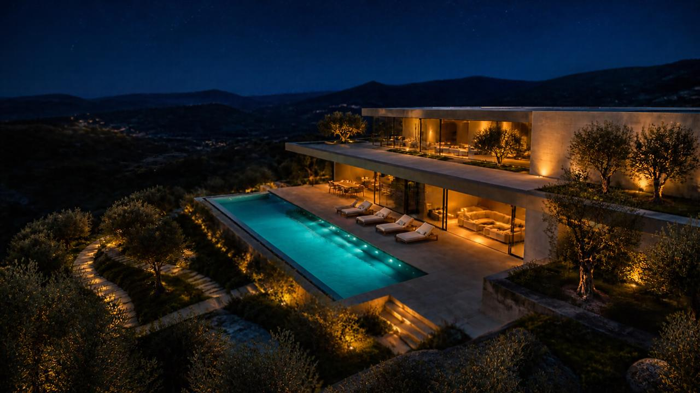
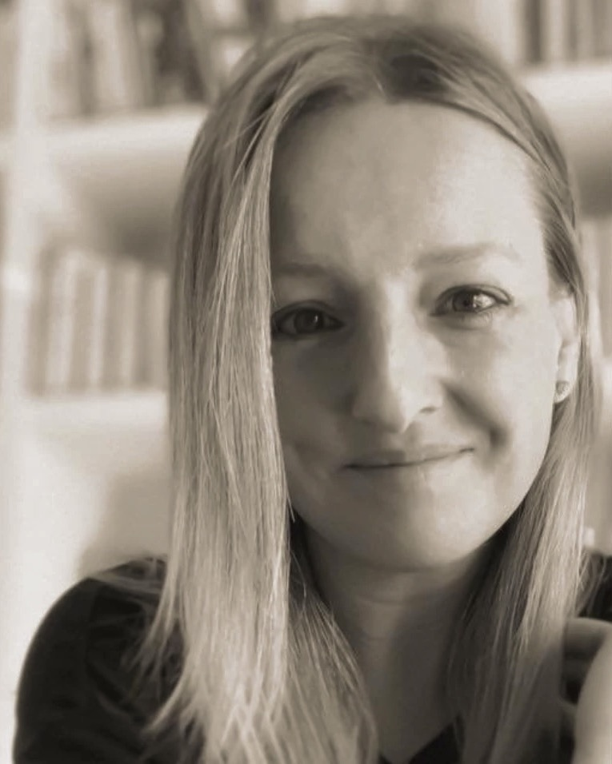

Sebastián Gil Arquitectos · Arquitecta en Madrid y Baleares Arquitectura que se habita.
Casas a medida para autopromotores, reformas y rehabilitación. Más de veinte años acompañando cada proyecto, del primer boceto a la licencia y la entrega de llaves.
02 · Implantación
Una casa que pertenece a su paisaje.
Descendemos por la ladera: la casa se asienta en el terreno y se abre al poniente.

03 · Exterior
La luz es un material.
Orientación, sombra y agua: la piscina refleja el cielo de cada hora.

04 · Interior
Cada vista, proyectada.
Cruzamos las cristaleras. Los huecos se abren donde el paisaje lo pide y el interior continúa hacia fuera.

05 · Al caer la noche
Y la casa se enciende.
La iluminación se piensa desde el proyecto, no se añade al final.
Proyecto conceptual
01 Servicios
Un estudio para todo el proceso.
Diseñamos, tramitamos y dirigimos. Una sola interlocutora desde la primera visita a la parcela hasta el último detalle de obra.
-
01
Obra nueva
Viviendas unifamiliares para autopromotores, edificios plurifamiliares y casas Passivhaus de consumo casi nulo.
-
02
Reforma y rehabilitación
Reformas integrales, rehabilitación de edificios, ampliaciones y cambios de uso, con respeto por lo que ya existe.
-
03
Gestión y licencias
Licencias de obra y actividad, tramitación municipal, declaración de obra nueva, dirección de obra y coordinación de seguridad y salud.
-
04
Estudios, informes e interiorismo
Estudios de viabilidad y económicos, informes técnicos, certificado energético e interiorismo de viviendas.
02 Proyecto
Casa entre olivos.
Un ejercicio de proyecto para mostrar cómo pensamos: una vivienda en ladera abierta al poniente, que se asienta en el terreno con muros de piedra, vuela sobre la piscina y se cubre de jardín.
- Uso
- Vivienda unifamiliar aislada
- Emplazamiento
- Ladera mediterránea
- Estrategia
- Orientación a poniente, sombra profunda, ventilación cruzada y cubiertas ajardinadas
- Materiales
- Hormigón claro, piedra caliza, madera y vidrio

03 El estudio
Más de veinte años dibujando casas para vivirlas.
Eva Sebastián Gil es arquitecta, licenciada por la Universidad Europea de Madrid y colegiada en el Colegio Oficial de Arquitectos de Madrid (n.º de colegiada 22248).
Trabaja sobre todo en el centro de España y en las Islas Baleares, con proyectos en otros puntos del país. Su experiencia abarca desde la vivienda unifamiliar a medida hasta la rehabilitación de edificios, la gestión de licencias y el interiorismo, y también la vivienda social en Centroamérica: proyectos donde cada metro y cada euro cuentan, y que enseñan a construir con rigor.
El estudio trabaja con pocos encargos a la vez para poder atender cada uno en persona.
«Una buena casa no se nota: se vive.»
- +20años de experiencia
- Madrid·Baleareszonas principales de trabajo
- Centroaméricavivienda social
04 Proceso
Cómo trabajamos.
Cinco pasos claros, con decisiones a tu ritmo y sin sorpresas de coste.
-
01
Primera conversación
Escuchamos lo que necesitas, revisamos la parcela o el inmueble y te decimos con franqueza qué es viable.
-
02
Estudio previo y propuesta
Analizamos normativa, orientación y presupuesto. Te enviamos una propuesta de honorarios cerrada y desglosada por fases.
-
03
Anteproyecto y proyecto
Desarrollamos el diseño contigo hasta el proyecto básico y de ejecución, con mediciones para pedir presupuestos comparables.
-
04
Licencia y contratación
Tramitamos la licencia en el ayuntamiento y te ayudamos a comparar ofertas de constructoras.
-
05
Dirección de obra
Visitamos la obra, resolvemos imprevistos y controlamos calidad, plazos y coste hasta la entrega de llaves.
05 Preguntas frecuentes
Lo que suelen preguntarnos antes de empezar.
Tengo una parcela. ¿Por dónde empiezo?
Por un estudio de viabilidad. Revisamos la normativa urbanística de tu parcela (edificabilidad, ocupación, alturas, retranqueos), la topografía, la orientación y los accesos. Así sabes qué puedes construir y con qué presupuesto aproximado antes de comprometerte con nada.
¿Cuánto tarda una licencia de obra?
Depende del ayuntamiento y del tipo de obra. Una licencia para vivienda unifamiliar puede ir de unos pocos meses a bastante más según la carga de cada municipio; algunas obras menores se tramitan por declaración responsable, con plazos mucho más cortos. Antes de empezar te damos una estimación realista para tu municipio y preparamos el expediente para evitar requerimientos.
¿Cómo se calculan los honorarios?
No existen tarifas oficiales: dependen de la superficie, la complejidad y los servicios que necesites (proyecto, dirección de obra, gestión de licencias, interiorismo). Tras la primera conversación te enviamos una propuesta cerrada y desglosada por fases, para que sepas desde el principio qué incluye cada una.
¿Qué es una casa Passivhaus? ¿Es mucho más cara?
Passivhaus es un estándar de eficiencia energética basado en un buen aislamiento continuo, carpinterías de altas prestaciones, hermeticidad y ventilación con recuperación de calor. La inversión inicial suele ser algo mayor que la de una vivienda convencional y se compensa con un consumo muy bajo y un confort interior estable todo el año. Lo valoramos contigo para tu caso concreto.
¿Cuánto se tarda en tener el proyecto?
Depende del tamaño y de cuánto tardemos en cerrar decisiones juntos. En la propuesta incluimos un calendario por fases (anteproyecto, proyecto básico para licencia y proyecto de ejecución) para que puedas planificar la compra, la financiación y la obra.
¿Os encargáis también de la dirección de obra?
Sí. Dirigimos la obra, coordinamos la seguridad y salud cuando hace falta, y al terminar tramitamos la documentación final, incluida la declaración de obra nueva y el certificado energético.
¿Trabajáis fuera de Madrid?
Sí. Trabajamos principalmente en Madrid y el centro peninsular y en las Islas Baleares, y desarrollamos proyectos en otros puntos de España. También tenemos experiencia en vivienda social en Centroamérica.
¿Podéis ayudarme solo con el interiorismo o una reforma?
Sí. Hacemos proyectos de interiorismo de viviendas unifamiliares y reformas integrales, y también encargos puntuales como informes técnicos o certificados energéticos.
06 Contacto
Cuéntanos tu proyecto.
Una parcela, una casa que reformar o solo una idea. Escríbenos y te responderemos personalmente.
Madrid · Islas Baleares · resto de España
Gracias, hemos recibido tu mensaje.
Te responderemos personalmente lo antes posible. Si lo prefieres, también puedes escribirnos por WhatsApp.